3．奇解
奇解不能通过给积分常数以一个确定值的方法从通解得到；这就是说，它不是特解。这是泰勒在他的《增量法》(12)中求解一阶二次方程时观察到的。莱布尼茨在1694年已经看到一个解族的包络也是一个解。克莱罗和欧拉对奇解作了更加完整的探讨。
克莱罗在1734年的著作(13)中处理了现在以他的名字命名的方程
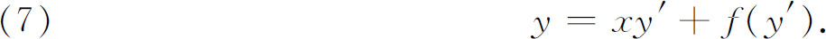
令p表示y′，则
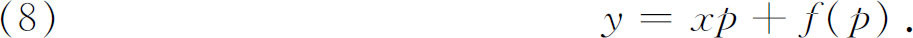
对x求微商，克莱罗得到
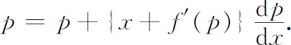
从而
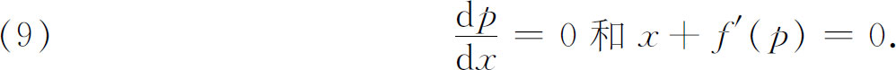
方程
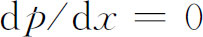
导致y′＝c，再由原方程我们有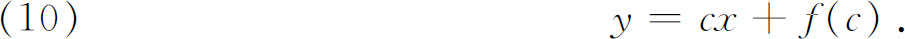
这就是通解，而且它是一个直线族。第二个因子
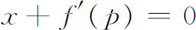
，可以与原方程一起用来消去p，这就给出了一个新的解，它就是奇解。为了弄清它是通解的包络，我们利用（10），并且关于c求微商，这样就有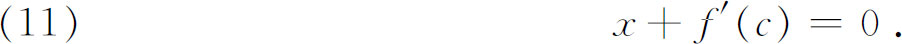
从（10）与（11）之间消去c得到的曲线就是包络。但是，这两个方程恰好与上面给出奇解的两个方程一样。奇解是一包络这一事实还是不甚了然的，但是奇解不包括在通解中，克莱罗却是清楚的。
克莱罗与欧拉已经给出方法，从微分方程本身求出奇解，即从
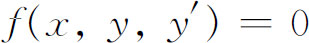
与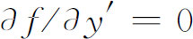
消去y′。这一点以及奇解不包括在通解中的事实，困住了欧拉。他在1768年的《原理》中(14)，给出了一个从特殊积分鉴别奇解的判别法，此法在未知通解的情况下，也可以应用。达朗贝尔(15)加强了这个判别法。后来拉普拉斯(16)把奇解（他称作特殊解）的概念推广到高阶方程和三个变量的方程。拉格朗日(17)对奇解与通解的联系作了系统的研究。他给出一般的方法，用明确而漂亮的手法从通解消去常数而得到奇解，这超过了拉普拉斯的贡献。设已知通解
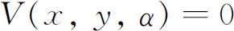
，拉格朗日的方法是求出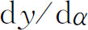
，并令它等于0，再从这个方程与V＝0消去α。同样的程序也适用于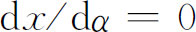
。他还扩大了克莱罗与欧拉从微分方程求奇解的知识。最后，拉格朗日给出奇解是积分曲线族的包络的几何解释。在奇解的理论中，有些特殊的困难他是没有认识到的。例如，他没有了解到，别的奇异曲线，但不是奇解，也可以从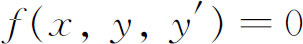
与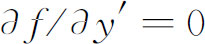
消去y′得到，或者说，一个奇解可以包括一支特解。奇解的完整理论是在19世纪发展起来的，而且由凯莱（Arthur Cayley）和达布（Gaston Darboux）在1872年才把它处理成现代的形式。